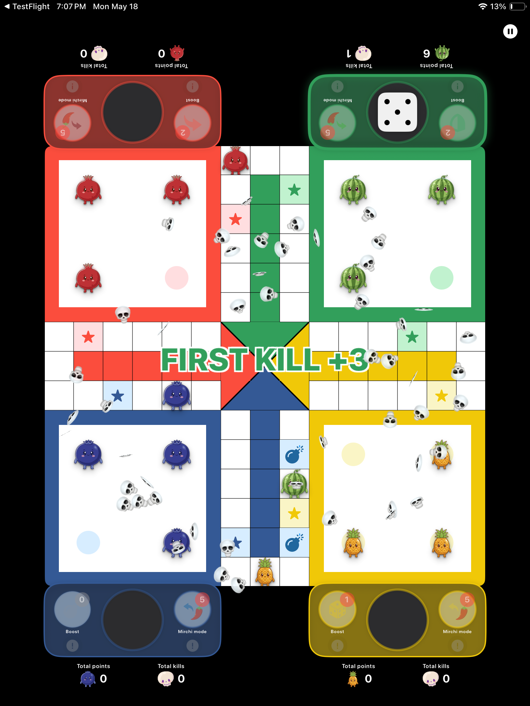
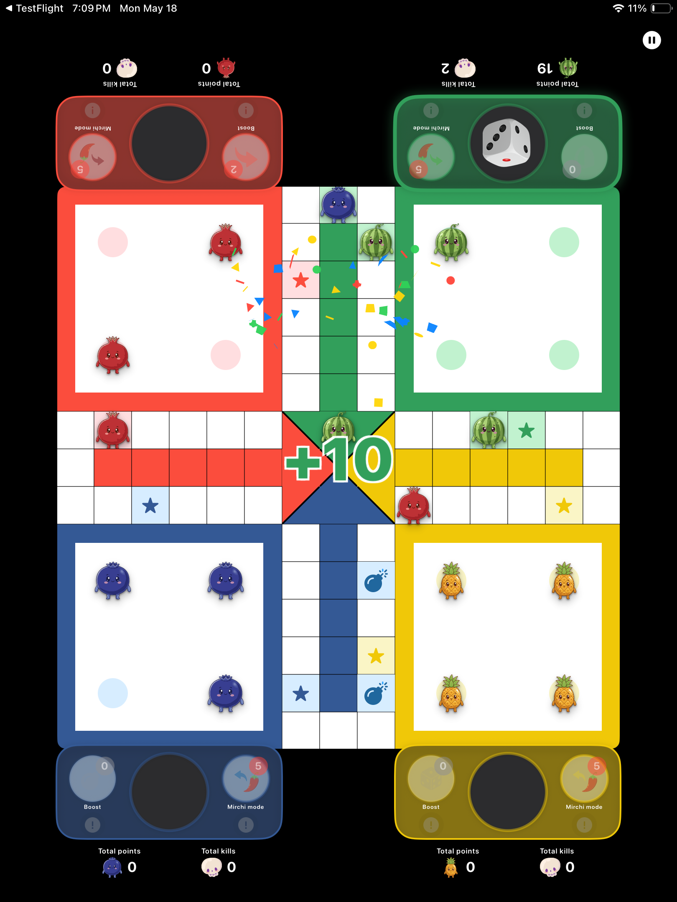
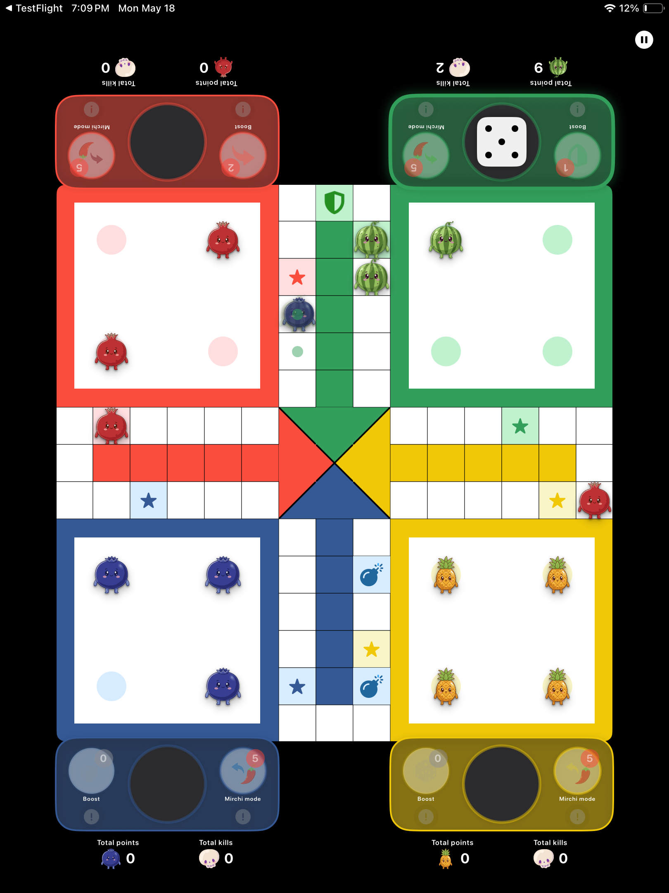
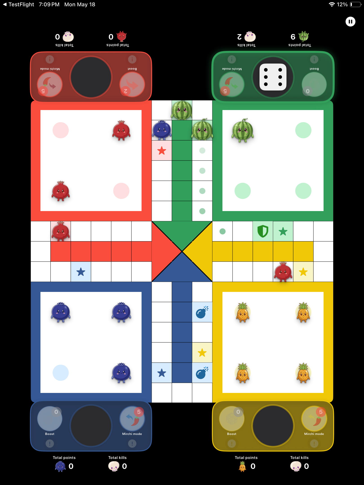
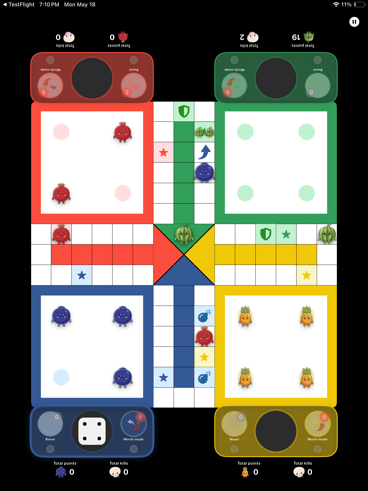
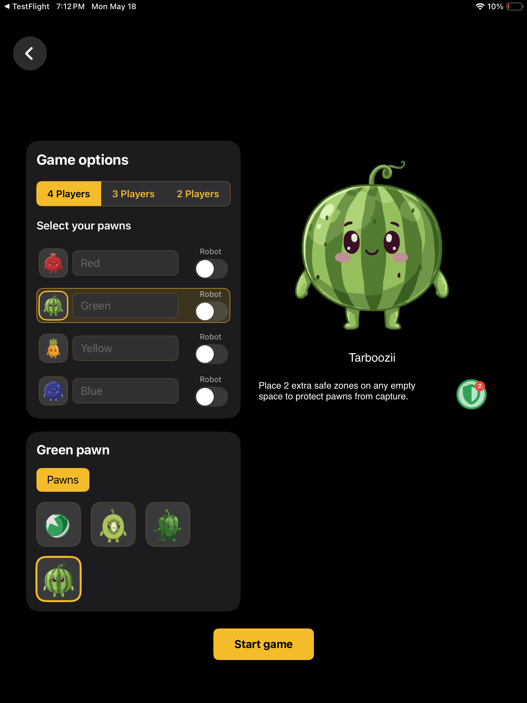

Ludo with a spicy twist. Move backward in Mirchi Mode to capture, escape, and take revenge:
solo against smart robots, or 2–4 players on one device. No ads, ever.
iPhone preview
iPad preview

Strategic scoring — every capture counts

Mirchi Mode — backward moves that still capture

2–4 players on one device

Traps, safe zones, and pawn powers on the board

Deploy traps and safe zones anywhere

Pick fruit pawns, set robots, and start — no sign-in required
Why Ludo Mirchi?
Mirchi Mode: Each player gets 5 backward moves per game. Use them to surprise opponents, escape captures, and turn the game around. Backwards still captures.
Robot Opponents: No friends nearby? Play solo. Any player slot can be set to a smart robot — perfect for travel, late nights, or a quick game between meetings.
Pawn Powers: Unlock pawns with special abilities: deploy traps, drop safe zones anywhere on the board, force a 6 on your dice, or gain extra backward moves.
One Device. No Internet: Built for pass-and-play on a single iPhone or iPad — couch, kitchen table, plane tray. No Wi-Fi, no sign-in, no chat, no accounts. Just hand the device around.
No Ads, Ever: No banners. No forced videos. No "watch an ad to continue." We mean it.
Strategic Scoring: Captures, first-blood bonus, finish bonuses, top-kills, unluckiest-roll — every move and every dice matters in the final ranking.
Features
2–4 player local pass-and-play
Smart robot opponents — play solo anytime
5 backward "Mirchi" moves per player, per game
Unlockable fruit pawns with unique powers
Place safe zones (Green pawns)
Deploy traps (Blue pawns)
Force a 6 anytime (Yellow pawns)
Extra backward moves (Red pawns)
Detailed end-game scoring and bonuses
100% offline — no internet, no sign-in, no chat
Designed for iPhone & iPad
About In-App Purchases
Every game you play earns coins, and pawns unlock automatically once you've saved enough.
Don't want to wait? You can unlock any pawn instantly with an optional in-app purchase.
Purchases are never required to play or to win — the classic pawns are always free,
and Mirchi Mode is fully unlocked from day one.
If you love Ludo but want more strategy, more chaos, and more chances for revenge —
Ludo Mirchi brings the heat.